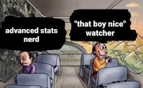

Sitting in the Pocket
I'm super new to the sport, but in an effort to collect all of the American dad hobbies, I've started watching Sunday Night football (lawn mowing is next, I'm starting early).
I find football to be a fun, albeit CTE riddled, attentional lens that highlights qualities that make great people great. Great Football players are able to read the defense, consistently creating situations where they are best positioned to win, and executing instantaneously - it's almost magical to watch in real time.
It's February 12th, 2023. Patrick Mahomes is 75 yards down the field just coming off a timeout with 2 minutes left in the game. During the huddle he relays the plan to his teammates. They are soon to run a pivot-wheel route to advance the ball 15 yards and convert on third down.
The snap begins, but the defense reads the coverage, every receiver is tagged, and the offensive line is starting to break. Mahomes decides to advance the ball as the only way to net a positive outcome is to move towards the line of scrimmage.
After cutting to the left and dodging the Eagles linebackers who break rank to stop him, three options begin to open up downfield. Kadarius Toney has beat his man and is arcing towards the endzone. Jerick McKinnon has broken the line of scrimmage and is open around the 30 yard line, and JuJu Smith-Schuster is sitting in open space with two defenders 15 yards away.
Given this scenario, who are you picking? You should actually take a second and pick one. For me, I'm ripping a pass downfield to the open man towards the endzone and hoping he mosses the shit out of James Bradberry for the game.
This is the wrong decision. Mahomes, given the same scenario, understands that Toney sitting near the endzone is not really open, Bradberry covering him is having an All-Pro season and will likely recover, forcing an impossible catch resulting in a drop or pick. McKinnon sitting in the open field doesn't have the agility or top end speed to actually bring the ball home. It's actually Travis Kelce in double coverage who had scored earlier on in the game, and was feeling it that night, who needs to get the ball and has the best chance to win the game.
Our lives are filled with these moments. Everyone has a defense to read. We are consistently tasked with evaluating variables and improvising decisions that determine how far we get to advance the ball down the field, so I’d argue that it is worth spending the extra time taking a step back and scrutinizing, because the best decisions are often the most informed.
This advice comes at a stark contrast from the normal “ship fast fail hard” mantra that permeates the startup community, and frankly, I think iterating fast alone is insufficient to attaining real success. At any given moment, you are prompted with a plethora of decisions consciously and subconsciously.
Everyone is already shipping fast, and if things aren’t working for you, you might feel like you are already failing hard. By sprinting in various directions you may achieve some level of success, but this is fool’s gold. At best, trying new things alone can only bring you to a local maximum in life. Without applying some sort of intuition (often by experience) there is no guarantee that you are in the direction of the global maximum.
Well if trying things won’t get me to where I want to go, how do I glean this “information” and apply it to my life? Like anything great in life, it’ll come at a premium. Deep reflection, listening, and taking ownership of more situations in your life allows for you to create heuristics to apply to future situations. Iterating fast is still necessary for accumulating experience, but I posit that people should keep in mind thoughtful reflection to develop a set of heuristics that allow them to choose iterations that point towards the global maximum. Otherwise, you're accumulating distance without displacement.
You may expect these heuristics to be profound or universal. They're not. The best heuristics will often feel trite, flippant, and downright selfish because they are unique. You are deciding to assign small bits of agency to the world.
Here are a few heuristics that I have found to be useful. One in life and one in poker:
- If I am feeling immense amounts of friction, it's often time for a change.
I am someone who is blessed with the ability to assign a seemingly infinite energy to people, things, or ideas I find worthwhile. Putting in an extra revision, giving things an extra pass, or spending the hours just comes naturally, so when I find myself starting to avoid conversations, ideas, or challenges in general I'm often in situations that are not the best use of my time. For me when things start to fall flat, I always benefit from taking a step back and evaluating what truly matters. By looking for these spots in my life, I am able to reach a better state faster because I acknowledge these patterns.
- If there are two of the same card on the flop, I often overfold aggression if I don’t have a winner.
The flop comes out 5, 5, 2 rainbow. You're heads up against one opponent. On this board, the correct play for almost everyone is to check. If you have a five, you want to let your opponent catch up; if you don't, you want to see more cards.
At weaker tables, when someone deviates from this and starts betting aggressively, they're usually overexcited because they actually have it. You don't lose much EV by folding anything that isn't already a winner.
By choosing to sit in the pocket, over time your life will start to look like a well-oiled offense. You will accumulate experience, develop more heuristics. These will allow you to make better decisions and take control over parts of your life - that's what really matters.
Loose thoughts I had while writing:
- Every failed trial has a real time cost associated with it. Tablecloth math, but if you just try a random thing out and it takes you 2-6 months to tell if it's worth your time you only get 2-6 shots per year. This number drops if any of these ideas get any traction. If that is the case you may only get 1 shot per every 1-2 years, not accounting for the time in between each new thing tried. You just don't have time to brute force your way into success.
- Assuming that you want to get better at things, there is also a need to assign long long time horizons to goals. I feel like you get diminishing returns if you try new things too often.
- What is too often, how long is too long, are there parts of life that you should just let be frfr?
- In writing this I feel like the advanced statnerd, even though im normally a dat boy nice typa guy
- I should write something about poker, those ~120 words took so much editing to get down, and that one spot has soooo much nuance that is just not worth mentioning here :(
- Football lowk goated - Go Niners!

Motivating Reads:
If you found this funky, fresh, or have comments shoot me an email and follow me on Twitter.